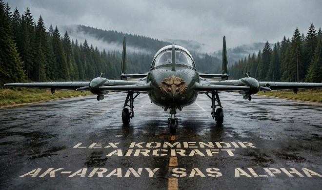

AK‑ARANY SAS ALPHA · Águia Dourada — Projeto de Modernização Tecnológica
AK‑ARANY SAS ALPHA · Golden Eagle — Technology Modernization Project
AK‑ARANY SAS ALPHA · Águila Dorada — Proyecto de Modernización Tecnológica
AK‑ARANY SAS ALPHA · Aigle d'Or — Projet de Modernisation Technologique
🇧🇷 Sorocaba — Brasil · 2026

O AK‑ARANY SAS ALPHA é um projeto de renovação tecnológica baseado na plataforma experimental Berkut 360 (configuração canard, 1989). Reavaliamos, atualizamos e integramos soluções comprovadas — sem inventar tecnologias — visando eficiência, segurança e aplicabilidade real.
AK‑ARANY SAS ALPHA is a technology renewal project based on the experimental Berkut 360 platform (canard configuration, 1989). We reassess, update, and integrate proven solutions — no invented technologies — aiming for efficiency, safety, and real‑world applicability.
AK‑ARANY SAS ALPHA es un proyecto de renovación tecnológica basado en la plataforma experimental Berkut 360 (configuración canard, 1989). Reevaluamos, actualizamos e integramos soluciones probadas — sin tecnologías inventadas — buscando eficiencia, seguridad y aplicabilidad real.
AK‑ARANY SAS ALPHA est un projet de renouvellement technologique basé sur la plateforme expérimentale Berkut 360 (configuration canard, 1989). Nous réévaluons, actualisons et intégrons des solutions éprouvées — sans technologie inventée — visant efficacité, sécurité et applicabilité réelle.
Resgatar conhecimento técnico, gerar material didático e buscar parcerias para transformar projetos descontinuados em alternativas viáveis. Foco: observação ambiental, rural e infraestrutura.
To recover technical knowledge, produce educational resources, and seek partnerships to transform discontinued projects into viable alternatives. Focus: environmental, rural, and infrastructure monitoring.
Rescatar conocimiento técnico, generar material educativo y buscar alianzas para transformar proyectos discontinuados en alternativas viables. Enfoque: observación ambiental, rural y de infraestructura.
Récupérer des connaissances techniques, produire des ressources éducatives et chercher des partenariats pour transformer des projets abandonnés en alternatives viables. Focus: surveillance environnementale, rurale et d'infrastructure.
Modelagem 3D → Simulação aerodinâmica → Definição de materiais → Projeto detalhado → Caminho para CAVE (Certificado de Autorização de Voo Experimental).
3D Modeling → Aerodynamic Simulation → Material Definition → Detailed Design → Path to Experimental Flight Authorization.
Modelado 3D → Simulación aerodinámica → Definición de materiales → Proyecto detallado → Camino hacia Vuelo Experimental.
Modélisation 3D → Simulation aérodynamique → Définition des matériaux → Conception détaillée → Vers Autorisation de Vol Expérimental.